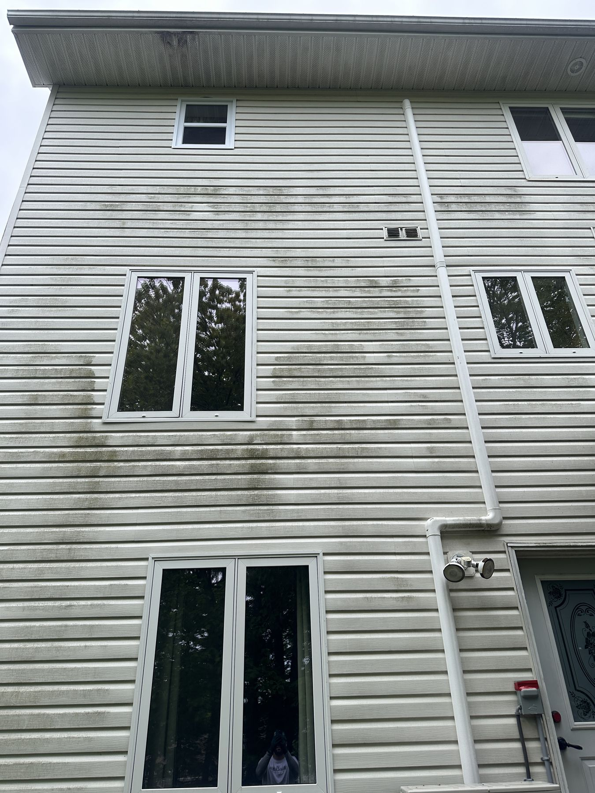
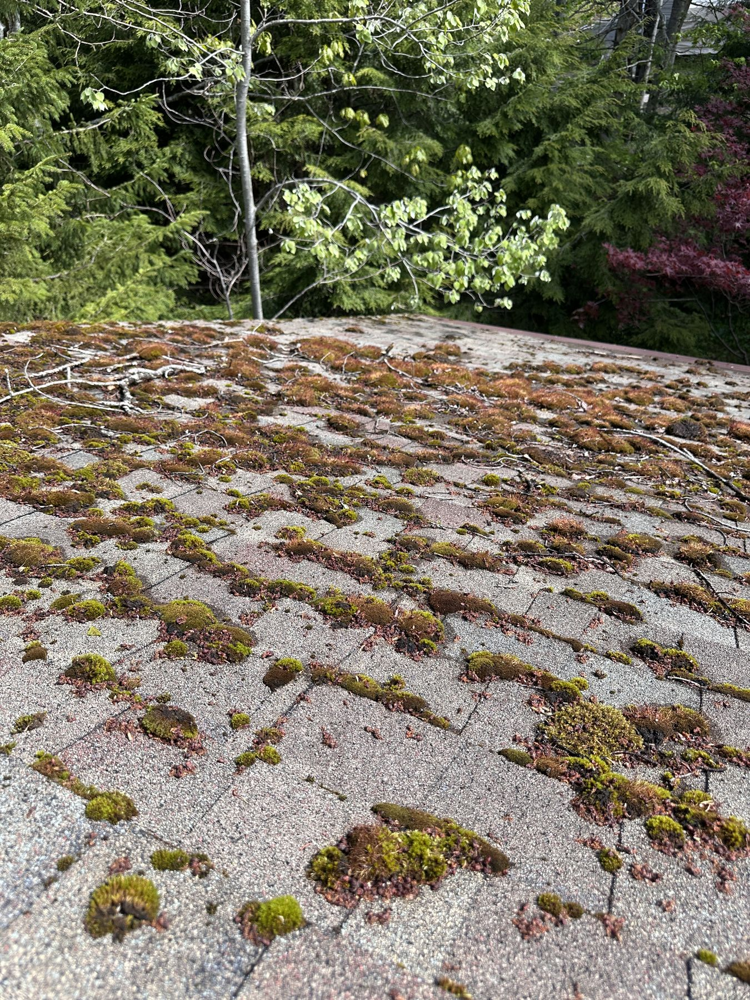
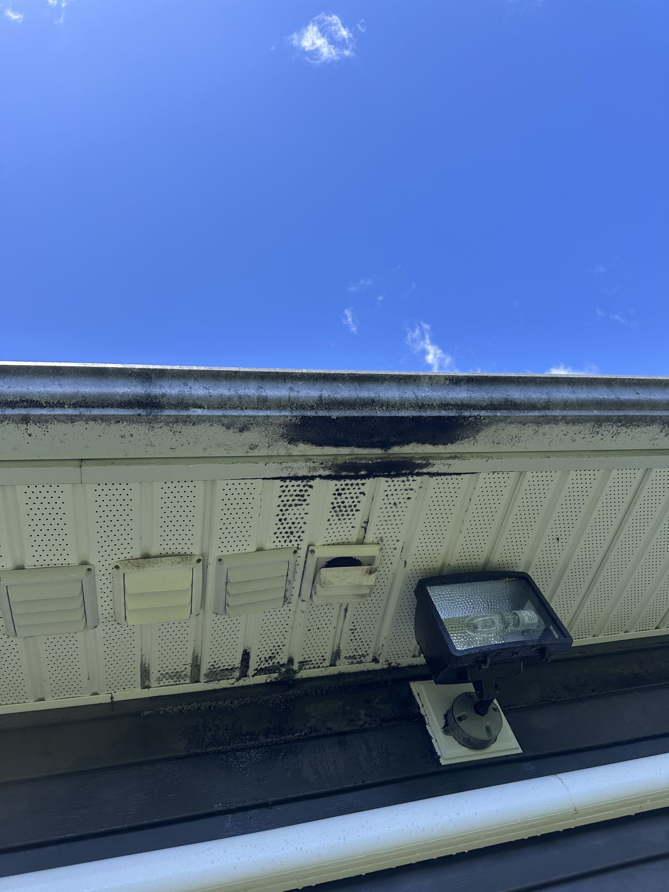
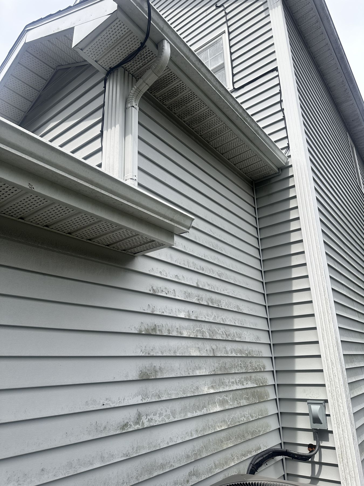
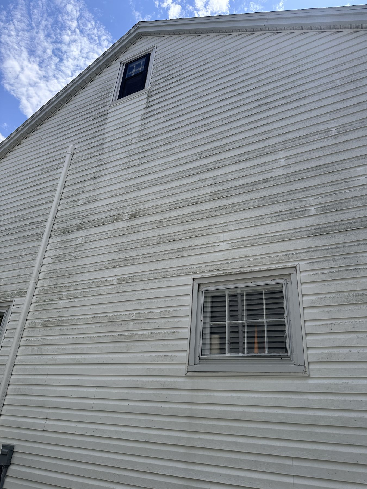
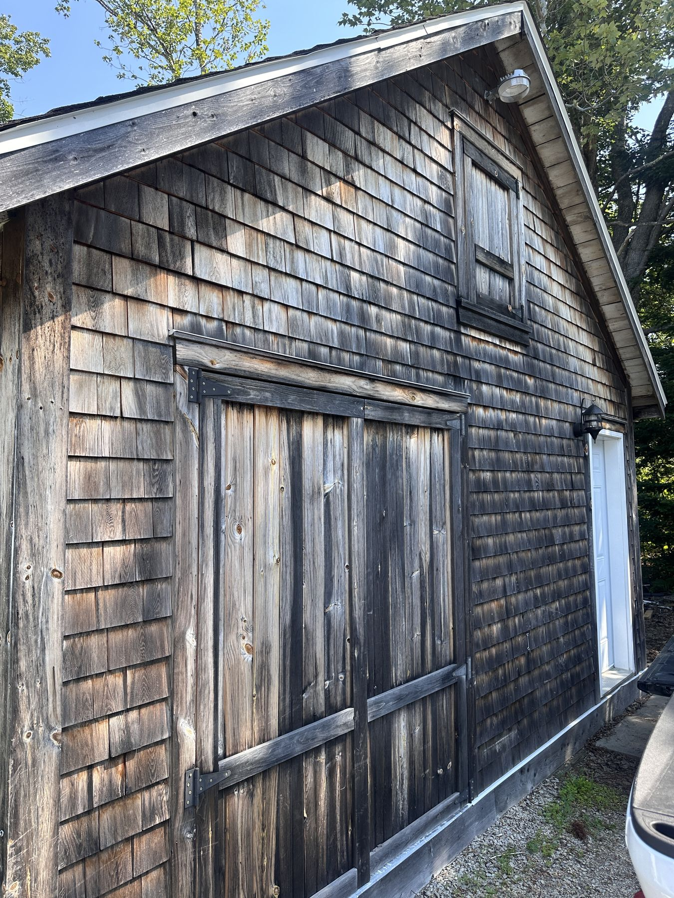

Quick answer
Algae looks like flat dark streaks, usually running down a roof or siding from the peak. Moss grows in raised, fuzzy green clumps in shaded, damp spots. Mold and mildew show up as fuzzy black, green, or white spots in poorly ventilated areas. Texture is the fastest way to tell them apart: flat = algae, raised and spongy = moss, fuzzy or powdery = mold.
If you've stepped back and looked at your roof or siding and thought "what is that," you're not alone — Halifax's humid, salty coastal air grows all three of these faster than almost anywhere else in the country. Here's how to tell them apart, what each one actually means for your home, and what to do about it.
Algae: Flat Dark Streaks
Those dark streaks running down a roof or siding aren't dirt or age — they're most often gloeocapsa magma, a living cyanobacteria that feeds on the limestone filler in asphalt shingles and clings to siding in shaded, humid spots. It appears flat against the surface, usually starting near the roof peak or under eaves and running downward in streaks as rain washes spores lower.
- Appearance: Flat, dark grey-to-black streaks, sometimes with a greenish tinge on siding.
- Where it grows: Roof slopes (especially north-facing), vinyl and wood siding, anywhere shaded and humid.
- Why it matters: It holds moisture against the surface underneath, which speeds up granule loss on shingles and can permanently stain porous siding if left too long.

Typical algae streaking on Halifax vinyl siding — flat, dark, and running downward from the roofline.
Moss: Raised, Fuzzy Green Clumps
Moss is easy to tell apart from algae by touch and shape — it grows in raised, spongy clumps rather than flat streaks, usually in the shadiest, dampest parts of a roof, deck, or wall. It's most common in roof valleys, under overhanging trees, and on north-facing surfaces that rarely see direct sun.
- Appearance: Raised, textured, bright-to-dark green clumps or cushions.
- Where it grows: Shaded roof valleys and edges, deck boards, retaining walls, north-facing siding.
- Why it matters: Moss holds water directly against the surface and can work its way under shingle edges or into deck board seams, which speeds up rot. It also has to be manually removed by hand before any treatment can work — unlike algae, which soft washing kills at the root without scraping.

Textbook moss growth on an asphalt shingle roof — raised, spongy clumps concentrated under tree cover.
Moss is the one that costs more to treat
Because moss has to be manually removed before treatment rather than simply soft washed, it's priced as an add-on on top of standard algae treatment for both roofs and decks — scraping it off carelessly can lift shingle granules or gouge wood, so it's slow, careful work. If what you're looking at is raised and spongy rather than flat, budget for that extra step.
Mold & Mildew: Fuzzy or Powdery Spots
Mold and mildew show up as fuzzy or powdery spots — black, green, grey, or white — concentrated in poorly ventilated, consistently damp areas rather than spread evenly across a surface. Think under eaves, behind shutters, in the shaded gaps between deck boards, or anywhere water tends to sit rather than run off.
- Appearance: Fuzzy or powdery spots, often clustered rather than streaked, in black, green, grey, or white.
- Where it grows: Shaded, damp, low-airflow spots — under eaves, behind shutters, deck board gaps, fence bases.
- Why it matters: Beyond appearance, mold and mildew can be a concern on frequently touched surfaces or if it's spreading toward window seals and vents, since some people are sensitive to mold spores.
Algae vs. Moss vs. Mold: Quick Comparison
| Algae | Moss | Mold / Mildew | |
|---|---|---|---|
| Texture | Flat | Raised, spongy | Fuzzy or powdery |
| Pattern | Streaks | Clumps | Clustered spots |
| Common spots | Roof slopes, siding | Roof valleys, decks | Eaves, deck gaps, shutters |
| Removal | Soft wash only | Manual removal + soft wash | Soft wash, sometimes spot treatment |




Real Halifax job sites — algae shows up on soffits, corners, gable ends, and even cedar shake roofing just as often as full walls.
Why Halifax Homes Get So Much of This
Halifax's combination of salt air, coastal humidity, and freeze-thaw cycles makes the HRM close to an ideal growing environment for all three. Homes near the harbour, under mature tree cover, or with shaded north-facing walls tend to see the fastest regrowth. It's not a sign your home is poorly maintained — it's just the climate we live in, which is exactly why annual cleaning is so standard here compared to drier parts of the country.
Why Pressure Washing Makes It Worse, Not Better
Blasting algae, moss, or mold off with a pressure washer gives instant visual results, but it doesn't address the root of any of the three — and it actively risks damage doing it. High pressure can strip protective granules off shingles, crack or dislodge cedar shakes, and force water behind vinyl siding panels, trapping moisture that leads to problems you can't see. It also doesn't kill what's underneath, so regrowth often comes back faster and heavier. We cover this in more detail in our soft washing vs. pressure washing guide.
What to Do About It
Soft washing is the right method for all three growth types on roofs and siding — a low-pressure application of cleaning solution that kills algae and mildew at the root so it rinses away naturally over the following weeks, without the risk that comes with a pressure wand. Moss gets the same treatment after being manually removed first. If you're not sure which of the three you're dealing with, that's a normal question — a quick photo or an in-person look is usually enough to tell, and it changes how we approach the job.
We're a locally owned, fully insured crew based in Bedford, NS, and identifying what's actually growing on a property is part of every house soft wash and roof cleaning we do across the Halifax Regional Municipality. If you're not sure what you're looking at, get a free quote and we'll take a look before recommending anything.
Frequently Asked Questions
How do I know if it's algae, moss, or mold on my house?
Algae shows up as flat dark streaks running down a roof or siding, usually starting near the peak. Moss grows in raised, fuzzy green clumps, most often on shaded roof sections, decks, or north-facing walls. Mold and mildew appear as fuzzy black, green, or white spots concentrated in damp, poorly ventilated areas like under eaves or between deck boards. Texture is the fastest way to tell them apart: algae is flat, moss is raised and spongy, and mold is fuzzy or powdery.
Is the black stuff on my roof or siding dangerous?
The black streaking on most Halifax roofs is gloeocapsa magma, a cyanobacteria that isn't a health hazard on its own, but it holds moisture against your shingles and shortens their lifespan. Mold and mildew are more of a concern if they're growing on frequently touched surfaces or spreading indoors, since some people are sensitive to mold spores. If you're unsure which one you're looking at, a professional can identify it correctly before recommending treatment.
Does moss damage my roof or deck?
Yes, more than algae does. Moss holds water directly against the surface it's growing on and can work its way under shingle edges or into deck board seams, which speeds up rot and granule loss. It also has to be manually removed before any treatment can work, unlike algae, which soft washing kills at the root without scraping.
Can I remove algae, moss, or mold myself?
You can, but pressure washing any of the three off a roof or siding risks stripping granules, cracking vinyl, or forcing water behind panels. Consumer-grade cleaners are also often too weak for established moss or heavy algae staining. Soft washing with a professional-grade solution is the safer and more effective method for all three, especially on roofs and painted or vinyl siding.
How often should I get my home cleaned to prevent regrowth?
Once a year is typical for most Halifax homes. Properties that are shaded, close to trees, or facing north tend to redevelop algae, moss, and mildew faster and may need attention every 8–10 months. Roofs specifically are usually fine on a 2–3 year cycle since gloeocapsa magma grows more slowly than the algae found on siding.

Kendall Scott
Owner/Operator, WashCrafters Exterior Home Solutions Inc. — Bedford, NS. Fully insured, 5.0 stars on Google, and a soft-wash specialist across the HRM.